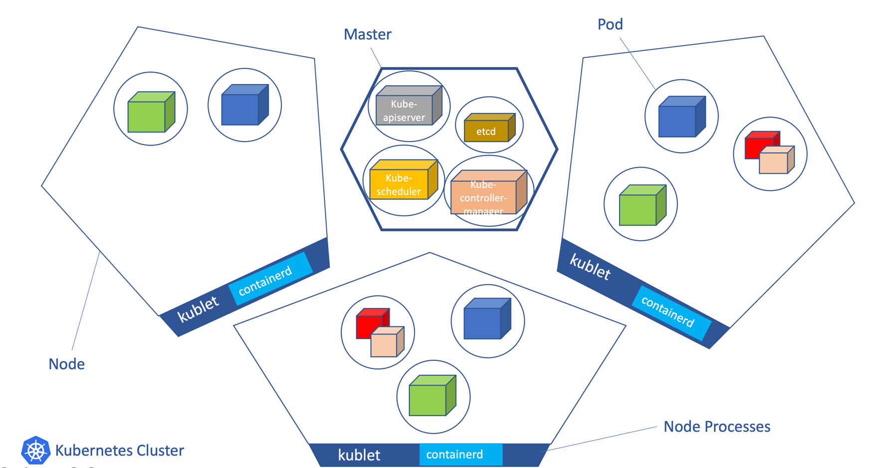
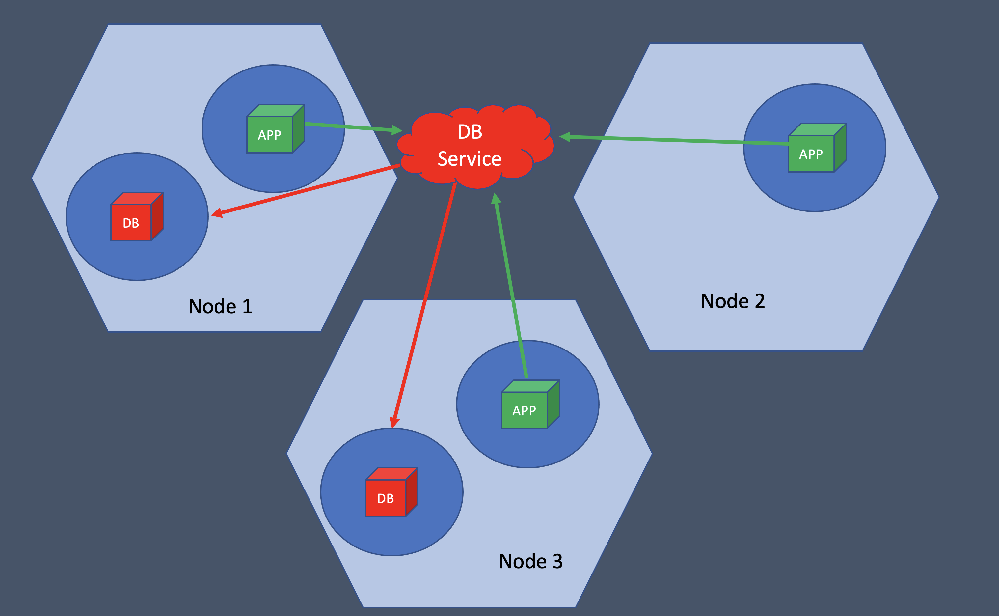
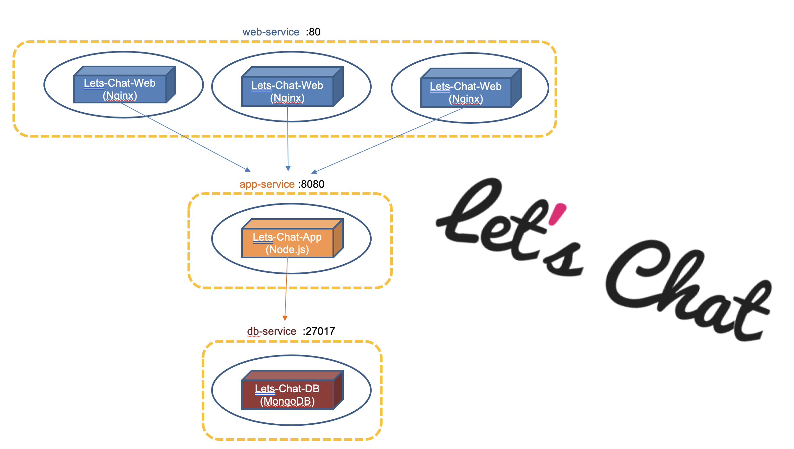

Kubernetes
Workshop
Eylon Malin
Agenda
- Introduction
- Docker
- Kubernetes
- kubectl
- Pod and Deployment
- Pod
- Deployment
- Interaction with Pods
- Restart Pod
- logs
- exec command
- Service
- ConfigMap
- Final Exercise
Introduction
Docker
Docker definition
- Docker is a container OS-level virtualization
- Container use multiple isolated user space instances
- In this way we can run multiple applications on same OS, while each application can only see the container's contents and devices
- Docker images become container when they run on docker engine
Dockerfile
FROM node:0.12-slim
USER root
RUN mkdir -p /usr/src/app
COPY docker/app/config.js /usr/src/app/app/config.js
COPY docker/app/app.js /usr/src/app/app.js
COPY docker/app/client.js /usr/src/app/media/js/client.js
CMD ["npm", "start"]
Kubernetes
Microservices challenges
- Auto scale - add more resources to your app upon load
- Load balancing - split the work between multiple containers
- service discovery - find the ip address of a peer container
- health monitoring
- configuration
- redundancy - keep working if one compute is gone
The Solution - Kubernetes
- Kubernetes (aka K8s) is an open-source container orchestration system for automating software deployment, scaling, and management.
- Google originally designed Kubernetes, but the Cloud Native Computing Foundation now maintains the project.
- Community includes Google, Red Hat, and over 3000 contributors.
- The name Kubernetes originates from Greek, meaning helmsman or pilot.
K8s architecture
kubectl
kubectl is the command-line tool for manage K8s.
kubectl command format:
kubectl command format:
kubectl [command] [TYPE] [NAME] [flags]- command: Specifies the operation that you want to perform on one or more resources, for example create, get, describe, delete.
- TYPE: Specifies the resource type
- NAME: Specifies the name of the resource. If the name is omitted, details for all resources are displayed
- flags: Specifies optional flags
kubectl command examples
kubectl get po # Display list of pods
kubectl get po lc-web # Display one pod named lc-web
kubectl get svc # Display list of services
kubectl describe po lc-web # Show details of pod named lc-web
kubectl edit po # Edit the pod by using editor
kubectl apply -f resource-file.yaml # Create/update resource from file
Pod
- A Pod is a group of one or more containers (docker) with shared storage and network resources.
- Pods are the smallest deployable units of computing in Kubernetes.
- Usually each μS run in its own POD(s)
kubectl apply
apply - create/change K8s resource (declarative way)$ kubectl apply (-f FILENAME | -k DIRECTORY)for example
> kubectl apply -f task-1/pod.yaml # create the podPod Creation
pod.yaml
apiVersion: v1
kind: Pod
metadata:
name: lc-web
spec:
containers:
- name: lc-web
image: eylonmalin/lets-chat-web:v1
ports:
- containerPort: 80
Create Pod Exercise
Use the cheat sheet to create a pod and show it's status- Create a pod by using apply -f task-1/pod.yaml
- show all pods status
- show pod lc-web status
- exec command in the pod: curl localhost:80
Deployment
Deployment
- Deployment describe desired state for pods
- Deployment make sure your pods are running within the desired replica.
- Usually each deployment run set of pods of same microservice
deployment.yaml
apiVersion: apps/v1
kind: Deployment
metadata:
name: lc-web # The name of your deployment
labels:
app: lc-web # The label of your deployment
spec:
replicas: 3 # Number of replicated pods
selector:
matchLabels:
app: lc-web # defines how the Deployment finds which Pods to manage. Should match labels defined in the Pod template
template:
metadata:
labels:
app: lc-web # The label of the pod to match selectors
spec:
containers:
- name: lc-web # The container name
image: eylonmalin/lets-chat-web:v1 # The DockerHub image
ports:
- containerPort: 80 # Open pod port 80 for the container
env: # [OPTIONAL] add environments values
- name: CODE_ENABLED
value: "true"
Create Deployment Exercise
- Delete the pod
- Show all pod status and watch what happen to the pod
- Create a deployment by applying task-2/deployment.yaml
- Show the deployment lc-web
- Show all pods status
- Show details about the deployment lc-web
Edit Deployment Exercise
Let's upgrade our deployment to imageeylonmalin/lets-chat-web:v2
- Go to task-2/deployment.yaml and edit the image to be eylonmalin/lets-chat-web:v2
- Apply the changes
- Get all pods status and watch pods go up and down
- Describe deployment and watch the changes
Scale Deployment
Change the amount of pods in an existing deployment$ kubectl scale --replicas=COUNT (-f FILENAME | TYPE NAME)Scale Down
- Scale deployment to 1 pod
- Get pods and watch what happen
Scale Up
- Scale deployment to 3 pod again
- Get pods and watch what happen
Interaction With Pods
Restart a Pod
Restart pod by delete it
- Get pods
- Delete the pod: kubectl delete po POD_NAME
- Get pods again and watch what happen
Restart pod by scale to 0 and then to 1
- Get pods
- Scale deployment to 0
- Get pods again: no pod is running
- Scale deployment to 1
- Get pods again: new pod is running
Pod Interaction: Logs
logs - print logskubectl logs [-f] [-p] (POD | TYPE/NAME) [-c CONTAINER]print logs and "exit"
kubectl logs POD_NAMEprint logs and follow
kubectl logs POD_NAME -fPod Interaction: Exec
exec - run commandkubectl exec (POD | TYPE/NAME) [-c CONTAINER] [flags] -- COMMAND [args...]Non interactive - execute command and "exit"
> kubectl exec lc-web-123 -- curl localhost:80 # execute command and exitInteractive - provide shell in the pod (like ssh)
> kubectl exec lc-web-123 -it -- sh # provide shell in the pod (like ssh)
>> curl localhost:80
>> ls
>> cat /var/lib/nginx/lets-chat/index.html
>> exit # exit from pod cli
Service
Service
Service in K8s
- An abstract way to expose an application running on a set of Pods as a network service.
- The service expose one DNS name + port to connect to these pods/deployment.
- In ths way other pods/external consumers, don't need to know the specific ip/port of each pod.
- The service route the traffic to the actual pods, and also can load-balance across them.
service.yaml
kind: Service
apiVersion: v1
metadata:
name: lc-web # The name of your service
spec:
selector:
app: lc-web # defines how the Service finds which Pods to target
ports:
- protocol: TCP
port: 80 # The service port
targetPort: 80 # The pods port
Create Service
- Create a service by applying task-3/service.yaml
- List services: kubectl get svc
- Describe the service
- Use the service by exec pod command: curl lc-web:80
Just browse to your user website.
(e.g. https://learning.k8s-workshop.com/eylon/index.html)
You can try to find the code by accessing the pod with exec
ConfigMap
ConfigMap
- ConfigMap is kay-value object that pods can consume for configuration
- ConfigMaps are usually used for injecting environment variables, or as configuration files in a volume
configmap.yaml
apiVersion: v1
kind: ConfigMap
metadata:
name: lc-web-config
data:
code.enabled: "false"
Deployment use ConfigMap
apiVersion: apps/v1
kind: Deployment
metadata:
name: lc-web # The name of your deployment
spec:
template:
spec:
containers:
- name: lc-web # The container name
image: eylonmalin/lets-chat-web:v1 # The DockerHub image
env:
- name: CODE_ENABLED
valueFrom:
configMapKeyRef:
name: lc-web-config
key: code.enabled
Create a ConfigMap
Create the configmap itself- Exec command in pod: curl localhost. The html contains code required
- Create the config map by applying task-4/lc-web-config.yaml
- Get configmap
- Describe configmap
- Exec command in pod again: curl localhost. Nothing has been changed. Why ?
Change deployment to consume the ConfigMap
There is no effect yet.We need to change the deployment to use the configmap
- Change the deployment to consume the ConfigMap by applying task-4/deployment.yaml
- Exec command in new pod: curl localhost. The html is different now
Edit a ConfigMap
- Edit task-4/lc-web-config.yaml code.enabled: "true"
- Apply changes
- Describe the ConfigMap
- Exec command in pod: curl localhost. The html is still the same 😏
- Let's try to update the deployment by applying task-4/deployment.yaml. Did it help ?
- Now let's try to restart the pods : kubectl rollout restart deployment lc-web
- Try curl now 😀
Final Exercise
Let's Chat application
Create all Lets Chat Resources
Delete previous resources
> kubectl delete deployment lc-web
> kubectl delete svc lc-web
> kubectl delete cm lc-web-config
> kubectl apply -f task-5/db-deploy.yaml
> kubectl apply -f task-5/db-svc.yaml
> kubectl apply -f task-5/app-cm.yaml
> kubectl apply -f task-5/app-deploy.yaml
> kubectl apply -f task-5/app-svc.yaml
> kubectl apply -f task-5/web-cm.yaml
> kubectl apply -f task-5/web-deploy.yaml
> kubectl apply -f task-5/web-svc.yaml
Use the commands you learned today to debug the application and solve the problem.
The problem and solution are only in the yaml files you've just applied.
No code is need to be fixed.